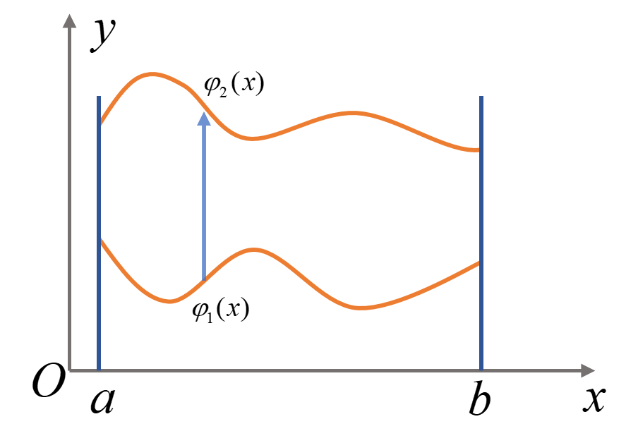
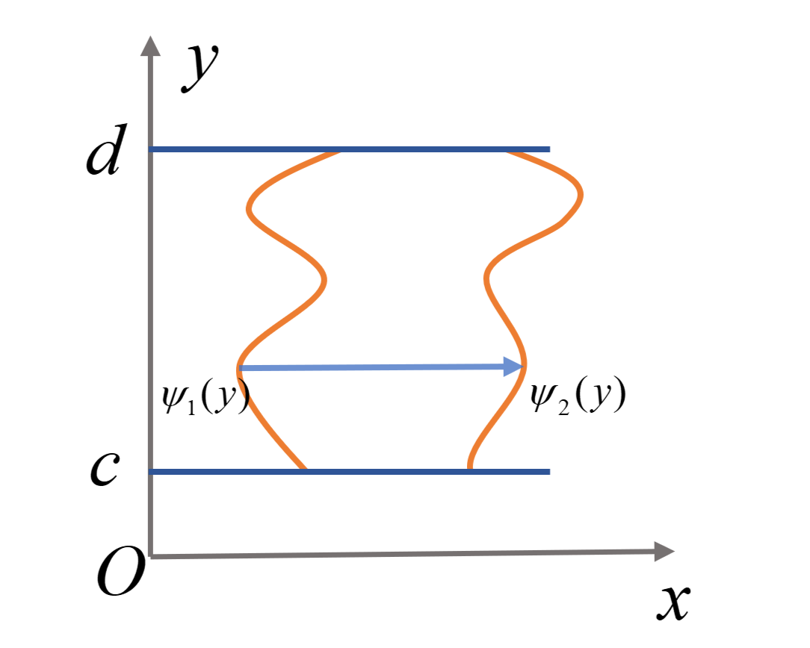
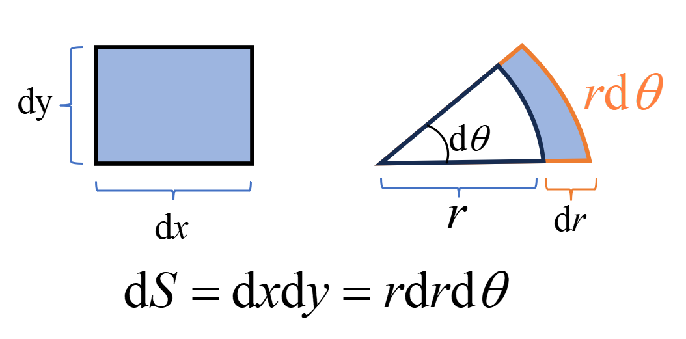
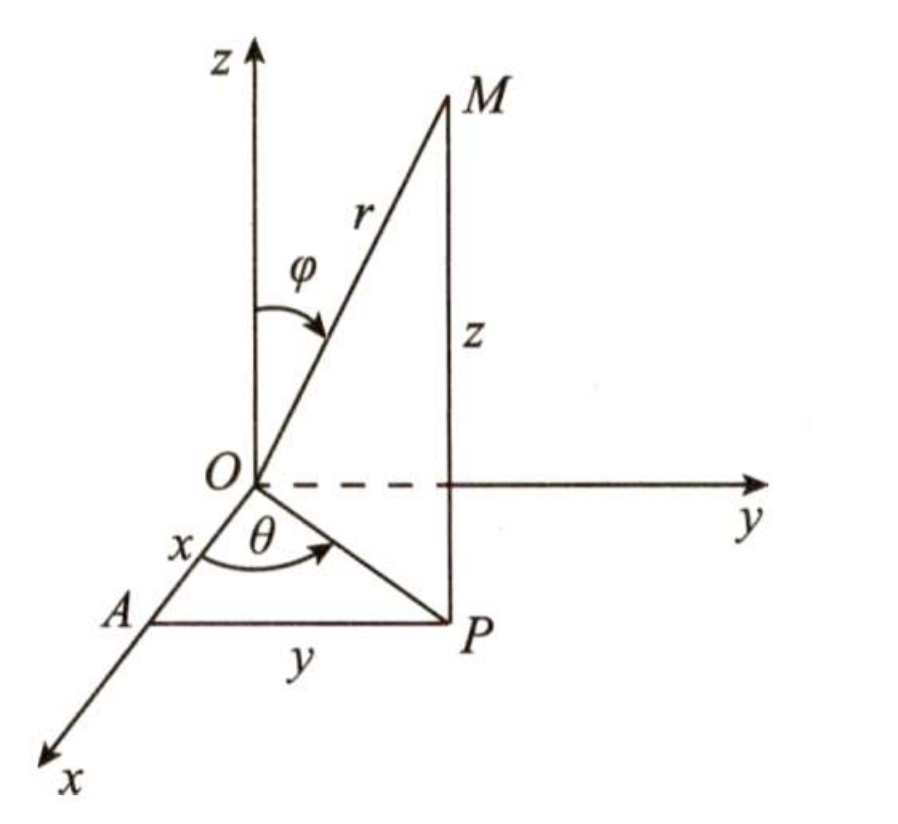

多重积分
二重积分
二重积分的定义及几何意义
定义
设 $z = f(x, y)$ 是平面上有界闭区域 $D$ 上的有界函数
$$ \iint\limits_D f(x, y) \, \mathrm{d}\sigma \xrightarrow{\Delta} \lim\limits_{D \to 0} \sum\limits_{k=1}^n f(\xi_k, \eta_k) \Delta \sigma_k $$其中 $D$ 为 $n$ 个小区域直径的最大值，$\Delta \sigma_k$ 为第 $k$ 个小区域的面积。
几何意义：
若函数 $f(x, y)$ 在区域 $D$ 上连续且非负，则二重积分 $\iint\limits_D f(x, y) , \mathrm{d}\sigma$ 在几何上表示以区域 $D$ 为底，曲面 $z = f(x, y)$ 为顶，侧面是以 $D$ 的边界为准线，母线平行于 $z$ 轴的柱面的曲顶柱体的体积；若 $f(x, y) \leq 0$，二重积分的值为负值，其绝对值等于上述曲顶柱体的体积。
二重积分的性质
(1) 线性性质：
对任意的常数 $\alpha, \beta$，有
$$ \iint\limits_{D} [\alpha f(x, y) + \beta g(x, y)] \mathrm{d}\sigma = \alpha \iint\limits_{D} f(x, y) \mathrm{d}\sigma + \beta \iint\limits_{D} g(x, y) \mathrm{d}\sigma $$(2) 区域可加性：
若将 $D$ 分割成两个不相交的区域 $D_1$ 与 $D_2$，则有
$$ \iint\limits_{D} f(x, y) \mathrm{d}\sigma = \iint\limits_{D_1} f(x, y) \mathrm{d}\sigma + \iint\limits_{D_2} f(x, y) \mathrm{d}\sigma $$(3) 单位函数积分：
如果在 $D$ 上，$f(x, y) = 1$，则
$$ \iint\limits_{D} \mathrm{d}\sigma = |D| $$其中 $|D|$ 表示 $D$ 的面积。
(4) 比较定理：
如果在 $D$ 上，$f(x, y) \leq g(x, y)$，则
$$ \iint\limits_D f(x, y) \,\mathrm{d}\sigma \leq \iint\limits_D g(x, y) \, \mathrm{d}\sigma $$(5) 估值定理：
设 $M, m$ 分别为连续函数 $f(x, y)$ 在闭区域 $D$ 上的最大值和最小值，$S$ 表示区域 $D$ 的面积，则
$$ mS \leq \iint\limits_D f(x, y) \, \mathrm{d}\sigma \leq MS $$(6) 中值定理：
设函数 $f(x, y)$ 在闭区域 $D$ 上连续，$S$ 为 $D$ 的面积，则在 $D$ 上至少存在一点 $(\xi, \eta)$，使
$$ \iint\limits_D f(x, y) \, \mathrm{d}\sigma = f(\xi, \eta) S $$直角坐标系下二重积分的计算
(1) X-型区域积分法：
当积分区域$D$为$X$-型平面区域，即 $D = { (x, y) | \varphi_1(x) \leq y \leq \varphi_2(x), a \leq x \leq b }$ 时，二重积分可化为先对 $y$ 后对 $x$ 的二次积分：
$$ \iint\limits_D f(x, y) \mathrm{d}x\mathrm{d}y = \int_a^b \mathrm{d}x \int_{\varphi_1(x)}^{\varphi_2(x)} f(x, y) \mathrm{d}y $$(2) Y-型区域积分法：
当积分区域 $D$ 为$Y$-型平面区域，即 $D = { (x, y) | \psi_1(y) \leq x \leq \psi_2(y), c \leq y \leq d }$ 时，二重积分可化为先对 $x$ 后对 $y$ 的二次积分：
$$ \iint\limits_D f(x, y) \mathrm{d}x\mathrm{d}y = \int_c^d \mathrm{d}y \int_{\psi_1(y)}^{\psi_2(y)} f(x, y) \mathrm{d}x $$二重积分的变量代换
极坐标变换
在极坐标变换 $x = r \cos \theta$, $y = r \sin \theta$ 下，二重积分的表达式为：
$$ \iint\limits_D f(x,y) \mathrm{d}x\mathrm{d}y = \iint\limits_D f(r \cos \theta, r \sin \theta) r \mathrm{d}r \mathrm{d}\theta $$其中面积元素的关系为：
$$ \mathrm{d}x\mathrm{d}y = r \mathrm{d}r \mathrm{d}\theta $$一般变量代换
设变换 $T: x = x(u,v), y = y(u,v)$ 将 $uOv$ 平面上的区域 $D _{uv}$ ——对应地映射到 $xOy$ 平面上的区域 $D _{xy}$，且 $x(u,v), y(u,v)$ 在 $D _{uv}$ 上有连续的偏导数。
雅可比行列式定义为：
$$ J(u,v) = \begin{vmatrix} x_u & x_v \\ y_u & y_v \end{vmatrix} = \frac{\partial (x,y)}{\partial (u,v)} $$若 $\frac{\partial (x,y)}{\partial (u,v)} \neq 0$，则逆变换 $T^{-1}$ 的雅可比行列式满足：
$$ \frac{\partial (u,v)}{\partial (x,y)} = \begin{vmatrix} u_x & u_y \\ v_x & v_y \end{vmatrix} = \frac{1}{\frac{\partial (x,y)}{\partial (u,v)}} $$其中$u_x\equiv \partial u/\partial x$，对于下标 $y$ 也类似。
积分换元公式： 若 $f(x,y)$ 在 $D _{xy}$ 上连续，且 $J(u,v) \neq 0$，则：
$$ \iint\limits_{D_{xy}} f(x,y) \mathrm{d}x\mathrm{d}y = \iint\limits_{D_{uv}} f[x(u,v), y(u,v)] |J(u,v)| \mathrm{d}u \mathrm{d}v $$其中 $|J(u,v)|$ 表示面积元素的变化比率：
$$ \mathrm{d}x \mathrm{d}y = |J(u,v)| \mathrm{d}u \mathrm{d}v $$利用对称性和奇偶性计算
关于$y$轴对称的情形
若积分域$D$关于$y$轴对称，且被积函数$f(x,y)$关于$x$有奇偶性，则：
$$ \iint\limits_{D} f(x,y) \mathrm{d}\sigma = \begin{cases} 2 \iint_{D_1} f(x,y) \mathrm{d}\sigma, & \text{当 } f(-x,y) = f(x,y) \text{（偶函数）} \\ 0, & \text{当 } f(-x,y) = -f(x,y) \text{（奇函数）} \end{cases} $$其中$D_1$为$D$在$y$轴右侧的部分。
关于$x$轴对称的情形
若积分域$D$关于$x$轴对称，且被积函数$f(x,y)$关于$y$有奇偶性，则：
$$ \iint\limits_{D} f(x,y) \mathrm{d}\sigma = \begin{cases} 2 \iint\limits_{D_1} f(x,y) \mathrm{d}\sigma, & \text{当 } f(x,-y) = f(x,y) \text{（偶函数）} \\ 0, & \text{当 } f(x,-y) = -f(x,y) \text{（奇函数）} \end{cases} $$其中$D_1$为$D$在$x$轴上方的部分。
关于直线$y=x$对称
若积分域$D$关于直线$y=x$对称（即交换$x$和$y$后区域不变），如：
- 圆域$x^2 + y^2 \leq R^2$
- 正方形域$0 \leq x \leq 1, 0 \leq y \leq 1$
则有：
$$ \iint\limits_{D} f(x,y) \mathrm{d}\sigma = \iint\limits_{D} f(y,x) \mathrm{d}\sigma $$应用技巧：
- 当被积函数$f(x,y)$关于某个变量为奇函数时，如果积分区域有对称性可立即得到积分值为0。
- 对于偶函数情形，可将积分区域减半计算后再乘以2。
- 变量对称性常可用于简化或验证积分结果。
三重积分的计算
直角坐标系下的三重积分计算
先一后二法（投影法）
以向$xOy$坐标面投影为例，积分区域$\Omega$表示为：
$$ \Omega = \{(x,y,z) | z_1(x,y) \leq z \leq z_2(x,y), (x,y) \in D_{xy}\} $$其中$D_{xy}$是$\Omega$在$xOy$坐标面上的投影。若$D_{xy}$还可表示为：
$$ a \leq x \leq b, \quad y_1(x) \leq y \leq y_2(x) $$则三重积分可化为三次积分：
$$ \iiint_{\Omega} f(x,y,z) \mathrm{d}V = \iint_{D_{xy}} \mathrm{d}x\mathrm{d}y \int_{z_1(x,y)}^{z_2(x,y)} f(x,y,z) \mathrm{d}z = \int_a^b \mathrm{d}x \int_{y_1(x)}^{y_2(x)} \mathrm{d}y \int_{z_1(x,y)}^{z_2(x,y)} f(x,y,z) \mathrm{d}z $$称为先对$z$、再对$y$、最后对$x$的积分次序。其他积分次序类似可得。
先二后一法（截面法/切片法）
积分区域$\Omega$表示为：
$$ \Omega = \{(x,y,z) | (x,y) \in D_z, c_1 \leq z \leq c_2\} $$其中$D_z$是平面$z=z$（常数）与$\Omega$的截面在$xOy$坐标面上的投影，则三重积分为：
$$ \iiint_{\Omega} f(x,y,z) \mathrm{d}V = \int_{c_1}^{c_2} \mathrm{d}z \iint_{D_z} f(x,y,z) \mathrm{d}x\mathrm{d}y $$注：
- 投影法适用于"顶部"和"底部"曲面明确的区域。
- 截面法适用于沿某一坐标轴（如$z$轴）截面形状容易描述的区域。
- 计算时可根据被积函数和积分区域的特点选择更简便的积分次序。
三重积分的变量代换
柱坐标变换
在柱坐标变换下：
$$ \begin{cases} x = r \cos \theta \\ y = r \sin \theta \\ z = z \end{cases} $$三重积分表达式为：
$$ \iiint_{\Omega} f(x,y,z) \mathrm{d}x \mathrm{d}y \mathrm{d}z = \iiint_{\Omega'} f(r \cos \theta, r \sin \theta, z) r \mathrm{d}z \mathrm{d}r \mathrm{d}\theta $$体积元素关系：
$$ \mathrm{d}x \mathrm{d}y \mathrm{d}z = r \mathrm{d}z \mathrm{d}r \mathrm{d}\theta $$适用情形：
-
积分区域关于$z$轴对称；
-
截面为圆形或环形区域。
球坐标变换
在球坐标变换下：
$$ \begin{cases} x = r \sin \varphi \cos \theta \\ y = r \sin \varphi \sin \theta \\ z = r \cos \varphi \end{cases} $$三重积分表达式为：
$$ \iiint_{\Omega} f(x,y,z) \mathrm{d}x \mathrm{d}y \mathrm{d}z = \iiint_{\Omega'} f(r \sin \varphi \cos \theta, r \sin \varphi \sin \theta, r \cos \varphi) r^2 \sin \varphi \mathrm{d}r \mathrm{d}\varphi \mathrm{d}\theta $$体积元素关系：
$$ \mathrm{d}x \mathrm{d}y \mathrm{d}z = r^2 \sin \varphi \mathrm{d}r \mathrm{d}\varphi \mathrm{d}\theta $$适用情形：
- 积分区域为球体或球壳；
- 被积函数含有$x^2+y^2+z^2$项；
- 问题具有球对称性。
注：
- 柱坐标适合处理轴对称问题；
- 球坐标适合处理球对称问题；
- 变量代换可简化积分计算，但需注意：
- 正确确定新积分限；
- 不要遗漏雅可比行列式（$r$或$r^2\sin\varphi$）；
- 保持体积元素的正确定向。
度规与体(面)积微元
对于不同坐标系下的体积元，可以通过勾股定理记忆（$+\to \times$，再开根号）。
二维
-
直角坐标系：
$$ (\mathrm{d}l)^2 = (\mathrm{d}x)^2+(\mathrm{d}y)^2 $$面积微元：$\mathrm{d}\sigma = \mathrm{d}x \mathrm{d}y$ .
-
极坐标系：
$$ (\mathrm{d}l)^2 = (\mathrm{d}r)^2+r^2(\mathrm{d}\theta)^2~. $$面积微元：$\mathrm{d}\sigma = r\mathrm{d}r \mathrm{d}\theta$ .
三维
-
直角坐标系：
$$ (\mathrm{d}l)^2 = (\mathrm{d}x)^2+(\mathrm{d}y)^2+(\mathrm{d}z)^2~. $$体积元$\mathrm{d}V = \mathrm{d}x \mathrm{d}y \mathrm{d}z $.
-
柱坐标系：
$$ (\mathrm{d}l)^2 = (\mathrm{d}r)^2+r^2(\mathrm{d}\theta)^2+(\mathrm{d}z)^2~. $$体积元$\mathrm{d}V = r\mathrm{d}r \mathrm{d}\theta \mathrm{d}z $.
-
球坐标系：
$$ (\mathrm{d}l)^2 = (\mathrm{d}r)^2+r^2(\mathrm{d}\varphi)^2+r^2\sin^2\varphi(\mathrm{d}\theta)^2~. $$体积元$\mathrm{d}V = r^2\sin\varphi \mathrm{d}r \mathrm{d}\theta \mathrm{d}\varphi $.
参考资料：
【1】李永乐，王式安，刘喜波等。考研数学复习全书・基础篇 [M]. 北京：中国农业出版社，2024.
【2】王书彬。高等数学（下册）[M]. 北京：高等教育出版社，2020.
【3】张天德，窦慧，崔玉泉，王玮。全国大学生数学竞赛辅导指南(第2版)[M]. 北京：清华大学出版社，2017.